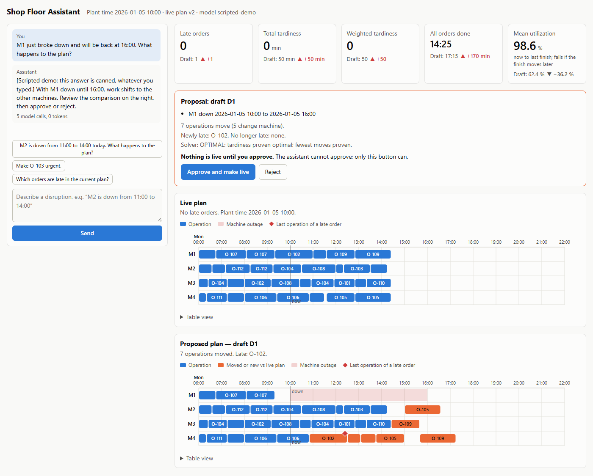
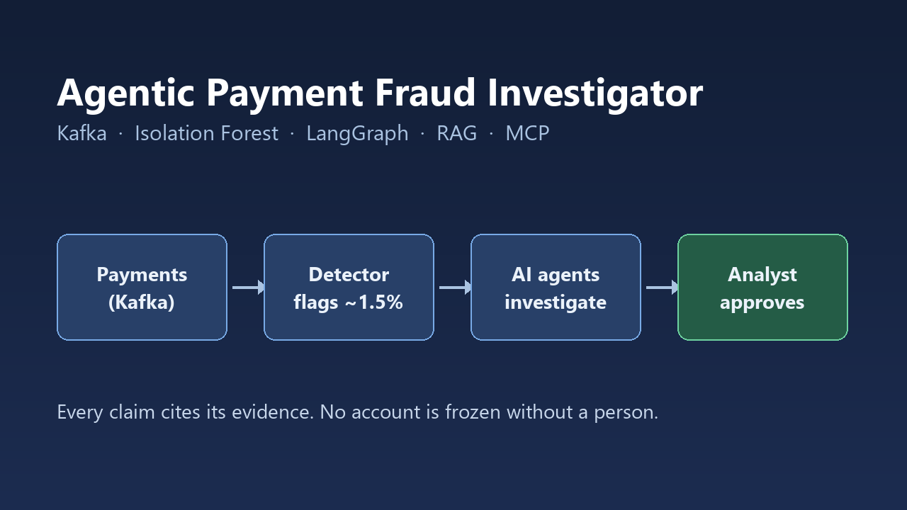
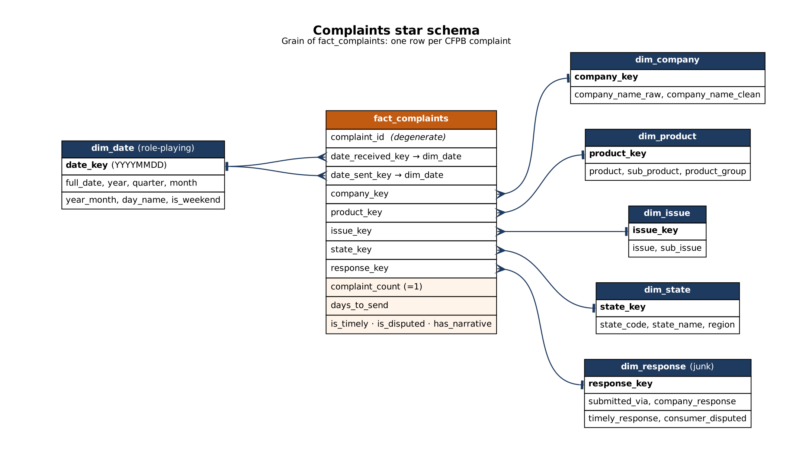
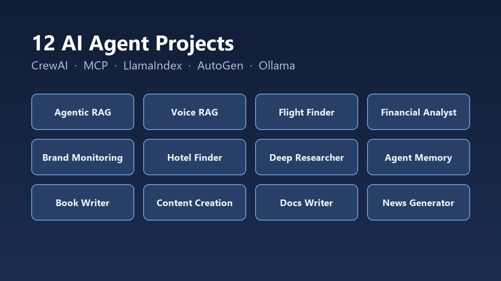
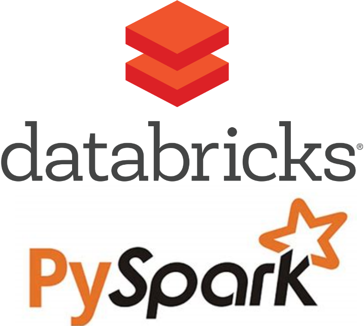
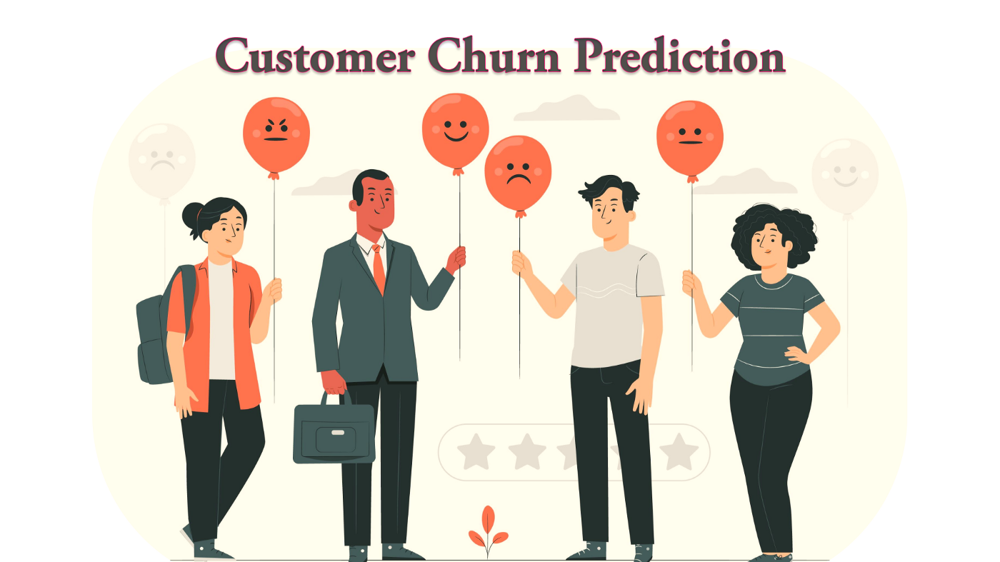

Oct 2026
An LLM agent that turns plain-language factory disruptions (“machine M2 is down from 11:00 to 14:00”) into schedule changes, re-plans them with a CP-SAT solver and explains the trade-offs. The agent can never apply a change: a person approves every plan. Hand-written tool loop on the Anthropic SDK, 1,436 automated tests, red-team and scenario evals, a web UI with Gantt charts, and an MCP server.


Real-time fraud pipeline: Kafka streams payments, an Isolation Forest flags about 1.5% of them, and LangGraph agents investigate each flag with SQL, graph and RAG tools. Every claim cites its evidence, and an analyst approves before any account is frozen. Evals gate the CI build.

A secure RAG + agent copilot for a bank’s support team (in progress). Phase 1 built the data foundation on 18M public CFPB complaints: DuckDB loading, Postgres query tuning, a star schema, bronze/silver/gold layers and a dbt project with 62 tests.

Twelve AI agent projects, one per branch: agentic RAG, voice RAG, flight and hotel finders, an MCP financial analyst, a deep researcher, agent memory, a book writer and more. Built mainly with CrewAI and local models through Ollama.

Developed a real-time emotion detection system using CNNs on the FER-2013 dataset, implemented on a Jetson Nano for classroom facial expression analysis to enhance engagement and teaching effectiveness, with plans for integration into a classroom management system.

Conducted comprehensive data analysis, preprocessing, and visualization; developed a data transformation pipeline; and optimized machine learning models including Logistic Regression, Random Forest, and Decision Tree through hyperparameter tuning and cross-validation.

Used Spark RDD and SQL for in-depth data analysis and preprocessing, leading to decision tree classification and feature importance insights. Improved emergency response efficiency by targeting high-priority calls with PySpark for rapid pattern-based insights.

Applied five machine learning algorithms—Logistic Regression, Random Forest, SVM, KNN, and Naive Bayes—to predict customer churn in a telecom dataset, analyzed their performance, and provided actionable insights to telecom companies on churn strategies based on risk assessments.
Created a disease prediction system using Machine Learning algorithms (Naive Bayes and Decision Tree), featuring a GUI and chatbot for user-friendly symptom input and disease prediction, based on a detailed dataset for accurate early detection and intervention.

Visualization of data in Tableau